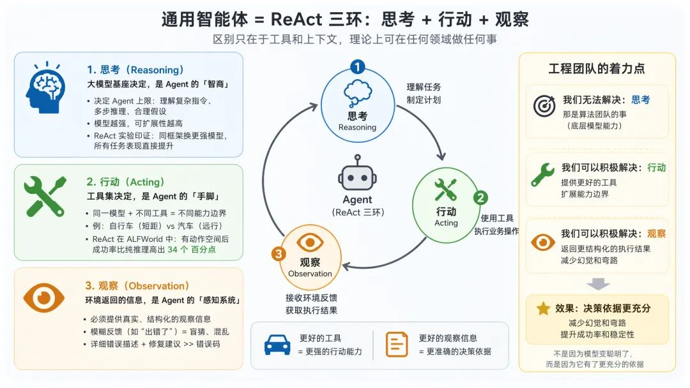

浅层：ReAct 就是「想一步、动一步、看一眼」
找一个水管工来家里修漏水的水管，他不会把整套方案一次想完再动手——他是想一下「先关总闸」，动手拧一下，蹲下来看一眼水停没停，再想下一步。LLM 自己只会「说」，不会「做」；把想、做、看接成一个闭环，让模型像水管工一样边干边看，这就是 ReAct。
这个词从哪来的
ReAct = Reasoning + Acting，来自 2022 年的论文《ReAct: Synergizing Reasoning and Acting in Language Models》（Yao et al., ICLR 2023）。论文的做法很直白：用提示词要求模型按固定格式输出三行戏——
Thought: 我需要先查一下 Apple 的创始人是谁 ← Reason：想
Action: Search[Apple 创始人] ← Act：动（一个文本指令）
Observation: Apple 由 Steve Jobs、Steve Wozniak 创立… ← 程序执行后，把结果拼回 prompt
Thought: 我还需要查 Wozniak 的出生年…… ← 带着观察，继续想这套协议有个致命软肋：Action 是一段自由文本，全靠解析器从模型的回复里抠出「Search[...]」这种格式。模型格式写歪一个括号，整个系统就崩。2023 年之后各家 API 原生支持了 function calling / tool use——Action 从「要解析的文本」升级成了「API 级的结构化对象」，解析器直接下岗。这就是现代 ReAct：协议下沉到了模型 API 里，但三拍节奏一步没变。
通用智能体：三环分工，各决定什么
把视角再拉高一层。既然所有 Agent 都是「ReAct 循环 + 通用大模型」，那构建出来的就是通用智能体——它不像传统软件那样被领域逻辑焊死：换一个领域，不用重写 Agent，只需要换工具和上下文。而三环各自由什么决定、边界在哪，非常清楚：
| 环节 | 由什么决定 | 形象地说 | 关键事实（ReAct 论文） |
|---|---|---|---|
| 思考 Reasoning | 大模型基座 | Agent 的「智商」：理解复杂指令、多步推理、信息不全时做合理假设 | 缩放实验：同一框架换更强模型，所有任务成绩整体抬升——基座能力直接决定 Agent 上限，不可违背 |
| 行动 Acting | 工具集 | Agent 的「手脚」：给自行车只能短途，给汽车才能远行 | ALFWorld 这类交互任务里根本不存在「纯推理」基线——没有动作空间，智能无处落地；Act 基线 45%，ReAct 71% |
| 观察 Observation | 环境返回的信息 | Agent 的「感知系统」：必须真实、结构化 | 模糊反馈（只说「出错了」不说为什么）= 逼模型瞎猜；详细错误描述 + 修复建议 ≫ 一个错误码 |

agent-loop.ts 把这件事压缩进了几百行代码（本机 0.84.3 版含注释 797 行，编译后 552 行），循环本体在《pi Agent Loop》手册已逐行走读过。本手册回答另一个问题：有了这个循环之后，一个完整能干活的 ReAct Agent 是怎么长出来的。
自测：2022 年论文版 ReAct 和现代 ReAct（如 pi）最本质的区别是什么？
配方：拼一个最小 Agent，只要四样原料
把 ReAct 拆到不能再拆，会剩四样东西：一份说明书、一本记事本、一个工具箱、一台发动机。少任何一样，agent 都会以一模一样的方式坏掉——下面可以亲手拆给你看。
pi 的类型系统把这四样钉得死死的。AgentContext 只有三个字段——它们就是前三样原料；第四样（循环）是消费这个上下文的函数：
/** Context snapshot passed into the low-level agent loop. */
export interface AgentContext {
systemPrompt: string; // ① 说明书：你是谁、有哪些工具、守什么规矩
messages: AgentMessage[]; // ② 记事本：完整对话历史（R/A/O 全在里面）
tools?: AgentTool[]; // ③ 工具箱：模型可以申请使用的动作
}
// ④ 发动机：agent-loop.ts 的 while 循环，推着 ①②③ 转起来整个 pi-coding-agent——2754 行的 AgentSession、16 个工具文件、扩展系统——都是给这四样原料做的工业级加强，而不是发明第五样东西。想验证这一点，最好的办法是把原料一件件拆掉，看 agent 怎么死：
为什么偏偏是这四样
- 说明书和记事本不能合并——systemPrompt 每次请求都要原样带上，但它不属于「对话」；对话是长的、会压缩的，说明书是短的、常驻的。
- 工具箱必须独立于说明书——工具的参数 schema 会被 API 单独校验（
validateToolArguments），说明书里写错工具名顶多误导，schema 错了直接 400。 - 发动机不持有任何状态——pi 的 loop 是纯函数，转完即走。状态永远住在记事本（messages）里，所以「持久化一个 session」等价于「把数组写进 JSONL」。
自测：拿掉「观察回写」后，agent 的死法和拿掉「工具箱」有什么不同？
解剖 R：模型的一次「想」，到底产出了什么
Reason 不神秘：它就是一次 LLM 调用的返回值——一条 assistant 消息。值得搞清楚的是这条消息肚子里有几种块、这些块什么时候进入上下文、以及什么情况下算没说完。
一条 assistant 消息 = 三种块的混排
{
role: "assistant",
content: [
{ type: "thinking", thinking: "用户要总结 README，我得先读到它……" }, ← 草稿纸（可选）
{ type: "text", text: "我先看一下项目根目录。" }, ← 说给你听的话
{ type: "toolCall", id: "call_01", name: "read",
arguments: { path: "README.md" } } ← 动作申请（给循环看）
],
stopReason: "toolUse", ← 为什么停笔：因为有工具要执行
usage: { input: 3122, output: 89, … },
timestamp: 1756600000000
}- 三种块可以混排在同一条消息里——先想、再说、再申请工具，是一次流式生成里自然长出来的顺序，不是三个系统。
- toolCall 块是「申请」不是「执行」——模型只能提出请求；真去读文件的是 loop 所在的进程。这是 Agent 安全模型的第一根支柱。
- thinking 块是否回传给模型，由厂商协议决定——pi 原样保存在 AgentMessage 里，发给 provider 时由 pi-ai 按各协议序列化（例如 Anthropic 的 extended thinking 要求带签名回传才能续写思路）。
「想多深」是一个滑钮，不是一个开关
| thinkingLevel（七档） | 含义 | 代价 |
|---|---|---|
"off" | 不生成思考块，直接作答 | 省 token，复杂任务易翻车 |
"minimal" / "low" / "medium" / "high" | 思考预算逐级放大 | 延迟与 token 随档位上升 |
"xhigh" / "max" | 仅部分模型家族支持 | 深思考任务才值得开 |
ReAct 论文里「Thought」要靠提示词逼模型写出来；现代模型把它做成了计费的官方档位——reasoning token 也是一种输出 token，按输出价计费。
停笔的四种理由（stopReason）
| stopReason | 含义 | |
|---|---|---|
"stop" / "toolUse" | 正常说完 / 要执行工具——循环的常规燃料 | |
"length" | 输出撞上 token 上限被砍断 → 本批 toolCall 参数不可信，全部判失败（防御细节见 Agent Loop 手册第 04 章） | |
"error" / "aborted" | API 出错 / 用户打断 → loop 立刻停机，不吞错 |
context.messages；之后每个 delta 都是「原地替换数组最后一个元素」。好处：任何时刻看上下文它都是完整的。代价：中断时可能留下半成品——pi 用 done/error 的 finalMessage 统一回填来兜底。
自测：模型在一次回复里能同时「说话」和「申请工具」吗？拆开的好处是什么？
type==="toolCall" 的块执行，互不干扰。解剖 A：把 read 工具开膛——动作是可以被类型化的
给模型用的工具，本质是「给模型用的 API」：schema 是文档，execute 是 handler。pi 默认只带四件套（read / bash / edit / write），拿最不起眼的 read 开膛，就能看清一个工具的完整全身像。
AgentTool 接口：一个工具的五件套
export interface AgentTool {
name: "read"; // ① 模型看到的函数名
label: "Read"; // ② UI 显示名
description: "Read file contents"; // ③ 卖给模型的广告词（直接影响调用质量）
parameters: Type.Object({ // ④ 参数 schema：JSON Schema + 逐字段 description
path: Type.String({ description: "Path to the file to read" }),
offset: Type.Optional(Type.Number({ description: "1-indexed start line" })),
limit: Type.Optional(Type.Number({ description: "Max lines" })),
}),
execute: async (toolCallId, params, signal, onUpdate) => { … }, // ⑤ 真正干活的 handler
executionMode?: "sequential", // 可选：强制本工具串行执行
}read 工具的 execute（359 行源码）去掉 UI 渲染后只干三件事，恰好是一个工具的完整生命周期：
execute: async (toolCallId, params, signal, onUpdate) => {
await access(absolutePath); // ① 权限检查：读不到就 throw（循环会接住）
const buffer = await readFile(absolutePath); // ② 真正的「动作」：一行 fs 调用
// 图片文件走另一条路：探测 MIME → 压到 2000×2000 → 返回 image 块
const truncated = truncateHead(text, { // ③ 节流：观察也有成本
maxLines: 2000, maxBytes: 50 * 1024, // 超出就截头留尾 + 说明被截断
});
return {
content: [{ type: "text", text: truncated.text }], // 给【模型】看的
details: { truncation: truncated }, // 给【UI】看的
};
}content 和 details：一具尸体，两条通道
| content | details | |
|---|---|---|
| 给谁看 | 模型——下一轮原样进上下文，烧 token | TUI / Web UI——渲染折叠面板、搜索、统计 |
| 格式 | 只有 text 和 image 两种块（provider 协议限制） | 任意 JSON，类型参数 AgentTool<TDetails> 约束 |
| 裁剪 | 必须自律（truncate 2000 行 / 50KB） | 随便塞，不影响上下文 |
这个分流是「观察成本」的第一道闸门：模型只需要知道「文件前 2000 行说了什么」，不需要知道渲染细节。
description 和 schema 逐字段的 description 决定。pi 每个工具都配了一条 readToolSystemPromptContribution（如「Use read to examine files instead of cat or sed」）——一行提示词省掉几千次错误调用。你写工具时，一半工作量应该在文案上。
| 默认四件套 | 一句话职责 | 各自的防御性设计 |
|---|---|---|
read | 看（文件 / 图片） | 截断节流、图片压缩、非视觉模型的降级注释 |
bash | 万能后门（执行任意命令） | 输出累计截断、超时、文件变更队列感知 |
edit | 精确替换字符串 | diff 校验、匹配不上即失败重试 |
write | 整文件写入 | file-mutation-queue 串行化，防止并发写花 |
另有 find / grep / ls / powershell 等可选工具——注意 pi 刻意只默认装四件：工具越少，模型选择错误率越低。
自测：为什么工具执行结果要拆成 content 和 details 两条通道，而不是一个 JSON 全给模型？
解剖 O：观察写回——反馈回路的质量守恒
Observation 是 ReAct 的「现实反馈」：模型上一拍申请了动作，这一拍就要对账。整个自我修正能力都从这里来——所以观察怎么写回、写回什么、以什么顺序写回，值得抠三个细节。
细节一：观察是一条正经消息，靠 id 与申请配对
{
role: "toolResult",
toolCallId: "call_01", ← 与 assistant 消息里的 toolCall.id 严格配对
toolName: "read",
content: [{ type: "text", text: "# My Project\n…" }],
isError: false, ← 错误标记直接长在消息上
timestamp: 1756600000123
}配对为什么重要？一次回复可以带多个 toolCall（比如同时 read 三个文件），provider 协议要求结果与申请一一对应——toolCallId 就是那根线。多丢了任何一半，下一次请求都会被 API 拒收。
细节二：错误不是异常，是带着 isError 标记的观察
isError:true 的 toolResult 喂回给模型。模型读到错误文本，下一拍自己换方案。反馈回路里没有「死路」——任何现实都会变成模型看得见的信息。pi 在类型层面贯彻到底：StreamFn 契约明文写着绝不允许 throw。
细节三：并行执行、乱序完成、按源顺序写回
自测：工具 execute 里 throw 了一个异常，agent 会崩吗？接下来发生什么？
executePreparedToolCall 把整个 execute 包在 try/catch 里，异常被转成 isError:true 的错误 toolResult（内容是异常 message），照常写回上下文。下一轮 LLM 看到错误说明，自行决定重试、换路径或放弃。唯一会「崩」出循环的是 LLM 调用本身的 error/aborted——那也是优雅停机而非异常。规则书：系统提示词是一个字符串拼接函数
很多人以为系统提示词是一篇精心写作的「文章」。在 pi 里它没有那么多玄学：buildSystemPrompt() 只有 170 行，是一个确定性的拼接函数——输入是「你开了哪些工具、项目里有哪些上下文文件、装了哪些 skill」，输出是一个字符串。拆开看每一块，你会发现全是「上下文管理」。
动手拼一次
下面是 buildSystemPrompt 的可运行速记版。勾选/取消组件，右侧实时拼出最终字符串——注意 ⑥ Skills 与 read 工具的联动（pi 规定：read 工具不可用时，skills 一段直接不注入，因为名单列了模型也没手段去读正文）：
自测：为什么 AGENTS.md 要包进 <project_instructions path="…"> 标签，而不是裸拼进 prompt？
分层：循环之上，皆是上下文管理
现在可以回收标题里的论点了。pi 从 0.1 到 0.84 加了几十个功能：记忆压缩、Skill、子 agent、扩展系统、模型热切换……去源码里找，会发现没有一个是往循环里加的——它们全部是「进入下一次 LLM 请求之前，对 systemPrompt / messages / tools / model 做一次变换」。循环永远是那个循环，变的只是喂进去的上下文。
点一层，看它挂在循环的哪一行
一张表看穿所有功能
| 功能 | 本质 | 挂载点（loop 的位置） | 改的是什么 |
|---|---|---|---|
| 记忆压缩 | 上下文瘦身 | transformContext | messages[]（旧消息 → 摘要） |
| Skill 加载 | 知识按需分期 | buildSystemPrompt + read 工具 | systemPrompt（名单）→ messages（正文） |
| Subagent | 循环的递归复用 | 某个工具的 execute() | tools[] 多一件工具；其观察 = 子 agent 的最终总结 |
| 扩展系统 | 旁路干预 | beforeToolCall / afterToolCall / subscribe | 拦截、改写工具与结果；注入消息 |
| 模型热切换 | 运行时换脑 | prepareNextTurn | model / thinkingLevel（甚至整个 context） |
| 人在环 | 排队与插话 | getSteering / getFollowUp 队列 | messages[]（两个排水口，见 Agent Loop 第 06 章） |
agent-loop.ts：797 行（编译后 552）。而产品壳 agent-session.js：2754 行——3.5 倍的差值全部花在「管理上下文」上：组装系统提示词、算 token 水位、触发压缩、重试、自愈、展开 skill、分发扩展事件。心脏极小，身体全是上下文管理。这也是为什么同一颗心脏能同时撑起 TUI、RPC、SDK 三种形态。
自测：如果让你给 pi 加「每次回答后自动写工作日志」，你会在哪一层实现？
agent_end 事件（或 L3 的 post-run 钩子），把 newMessages 追加到日志——纯旁路，零侵入；② 若希望日志「被模型自己知道」，做成扩展往下一轮注入一条 custom 消息，再靠 convertToLlm 控制可见性。判断标准：需要影响模型 → 改上下文；只需影响人 → 订阅事件。两种都不需要给 agent-loop.ts 提 PR。带走：五条决策 + 80 行写一个 ReAct Agent
读源码的终点是能自己写。先带走五条可以直接迁移的设计决策，再带走一份 80 行的最小可运行实现——它就是 pi 心脏的素人版，五脏俱全。
五条带得走的决策
| # | 决策 | 一句话理由 |
|---|---|---|
| 1 | 上下文即数据库：全部状态就是一个可序列化的 messages 数组 | 持久化 = 写 JSONL，恢复 = 读回来，断点续传免费获得 |
| 2 | 工具即 API：schema 是文档、description 是广告、execute 是 handler | 模型是「读文档写调用」的客户端，文档质量直接决定调用质量 |
| 3 | 错误即观察：反馈回路里不设异常通道 | 任何现实（包括失败）都变成模型可见的信息，自我修正才有原料 |
| 4 | 一切功能皆上下文变换：新功能先问「改的是四样原料中的哪一样」 | 循环保持恒定，产品才能狂奔而不伤心脏 |
| 5 | 先让循环转起来：压缩、Skill、并发都是转起来之后的优化 | 四样原料 + while 就能交付价值；其余按痛感逐步加装 |
最小实现：心脏的素人版
下面这份 TypeScript 对照 pi 的结构写成（省略流式、中断、并行保序等工程件），但骨架一一对应——对照着读，你会发现和 agent-loop.ts 的血缘关系：
type Msg = any; // 简化：实际项目应使用 provider SDK 的消息类型
async function runAgent(
systemPrompt: string, // 原料① 说明书
tools: { name: string; description: string;
parameters: object; execute: (args: any) => Promise<string> }[], // 原料③ 工具箱
messages: Msg[], // 原料② 记事本（外部持有 → 状态即数据库）
callLLM: (msgs: Msg[]) => Promise<Msg>, // pi 的 StreamFn 对应物
): Promise<Msg[]> {
while (true) { // 原料④ 发动机
const reply = await callLLM([
{ role: "system", content: systemPrompt },
...messages, // ← 无状态模型：每次全量带上历史
]);
messages.push(reply); // R：想法先入账
const calls = reply.content.filter((c: any) => c.type === "tool_use");
if (calls.length === 0) return messages; // 没有动作申请 → 模型交卷，循环出口
for (const call of calls) {
const tool = tools.find(t => t.name === call.name);
let result: string, isError = false;
try {
result = tool
? await tool.execute(call.input) // A：替模型动手
: throwErr(`Tool ${call.name} not found`);
} catch (e) {
result = String(e); isError = true; // 错误即观察：绝不向上抛
}
messages.push({ // O：结果写回（含错误）
role: "tool_result", tool_use_id: call.id,
content: String(result).slice(0, 50_000), // 节流：观察也要限量
is_error: isError,
});
} // ↻ 带着观察，回到下一轮 R
}
}
function throwErr(m: string): never { throw new Error(m); }streamAssistantResponse 的增量回填）· 用户打断（AbortSignal 贯穿全程）· 多工具并发与保序（executeToolCallsParallel）· steering/followUp 双队列 · 参数校验（validateToolArguments）· length 截断防御（整批枪毙）· 持久化与会话恢复（SessionManager）· 上下文压缩（transformContext 钩子）。每补一件，参考对应源码位置即可——这正是「素人版」的用法：骨架先转，工程件按痛感加装。
自测：为什么 runAgent 把 messages 作为参数让外部持有，而不是自己 new 一个？
终极测验：5 题验收
覆盖全部章节。答完看总分——4 题以上算出师。
参考资料 · References
本手册所有事实、行号与数据的出处。论文数据均对照原文核对，源码行号来自本机安装版。
延伸阅读 · 本站姊妹手册
| 手册 | 与本篇的分工 |
|---|---|
| pi Agent Loop | 循环机制本体：双环走读、五段工具流水线、steering/followUp 双队列、自愈决策树 |
| pi 上下文管理 | 第 07 章「记忆压缩」一层的深入：压缩水位线与五派压缩插件的内容哲学 |
| Subagent vs 多 Agent | 第 07 章「Subagent = 循环的递归复用」的架构级展开 |
| pi 扩展开发 | 把第 07 章「扩展系统」的挂载点写成可运行的 ExtensionAPI 实战 |